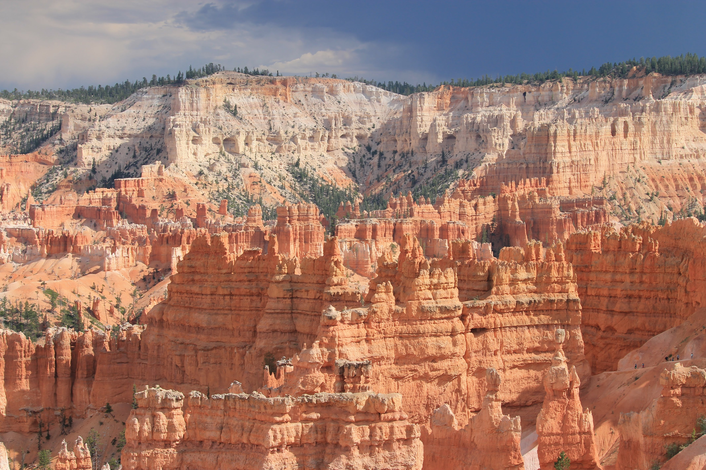
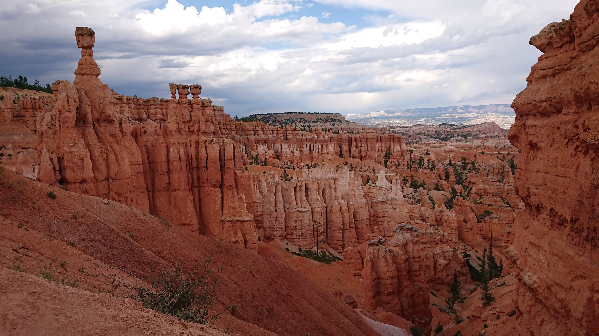

Bryce canyon was like stepping onto a different planet. The upper rim is at an altitude of 8000 feet so the air was a bit thin making it difficult to get your breath when climbing back up. We walked down into the canyon, through and back up the other side.
 